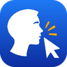

Tête-à-ClicLa souris au bout du regard
Démarrage
Démarrage de la caméra…
2
Regarde le centre de l'écransans bouger la tête
Gestes
Clignement longclic gauche · yeux fermés 2,5 s = pause
Sourcils levésclic droit
Bouche ouvertedéfilement : lève ou baisse la tête
Clic par immobilitégarde le curseur immobile : l'anneau se remplit, puis clic
Pointeur
Sensibilité horizontale
Sensibilité verticale
Stabilité
Activité
- Les actions apparaîtront ici.